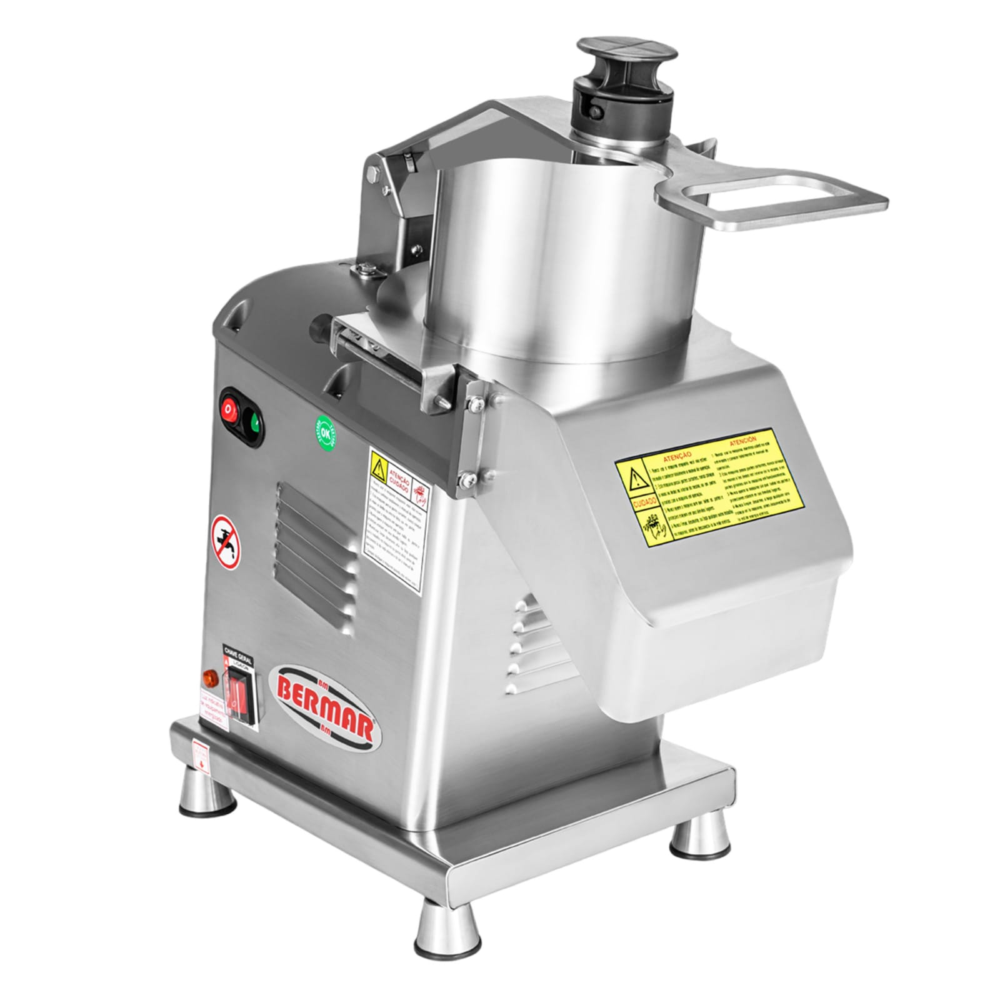

Instalação de Equipamentos
A instalação correta dos equipamentos é fundamental para garantir segurança, desempenho e máxima eficiência desde o primeiro uso. Nossa equipe realiza instalações técnicas seguindo as recomendações dos fabricantes e as normas de segurança aplicáveis.
Sobre o Equipamento
A instalação correta de equipamentos para cozinhas industriais é essencial para garantir segurança, desempenho e conformidade com as recomendações do fabricante. A Tec-Máquinas realiza instalações técnicas especializadas, assegurando que cada equipamento opere com máxima eficiência desde o primeiro uso.
Serviços Realizados
- Instalação de equipamentos industriais
- Configuração e regulagem
- Testes de funcionamento
- Verificação das ligações elétricas e de gás
- Orientação sobre operação e cuidados
Problemas Evitados
- Instalação incorreta do equipamento.
- Vazamentos de gás ou água.
- Falhas elétricas.
- Baixo desempenho operacional.
- Desgaste prematuro dos componentes.
- Riscos à segurança da operação.
Benefícios da Manutenção
Maior Vida Útil
A manutenção periódica reduz o desgaste dos componentes e aumenta a durabilidade da fritadeira.
Mais Segurança
Evita riscos de acidentes causados por vazamentos, superaquecimento e falhas elétricas ou a gás.
Melhor Desempenho
Garante aquecimento uniforme, maior produtividade e funcionamento eficiente do equipamento.
Redução de Custos
Evita reparos emergenciais, reduz o consumo de energia e prolonga a vida útil do equipamento.
Por que escolher a Tec-Máquinas?
+30 Anos
de experiênciaEspecialistas
em cozinhas industriaisAtendimento
rápido e personalizadoQualidade
em todos os serviçosPerguntas Frequentes
Quando devo realizar a manutenção da fritadeira industrial?
O ideal é realizar manutenções preventivas periodicamente para evitar falhas e aumentar a vida útil do equipamento.
Vocês realizam manutenção preventiva e corretiva?
Sim. Nossa equipe executa ambos os serviços, além da substituição de peças e regulagens.
Vocês atendem em Belo Horizonte e região?
Sim. Atendemos Belo Horizonte e toda a Região Metropolitana.
É possível solicitar um orçamento?
Sim. Basta entrar em contato pelo WhatsApp para agendar uma avaliação.
Precisa de manutenção em sua fritadeira industrial?
Conte com quem possui mais de 30 anos de experiência em assistência técnica para cozinhas industriais.
Solicitar Orçamento pelo WhatsApp